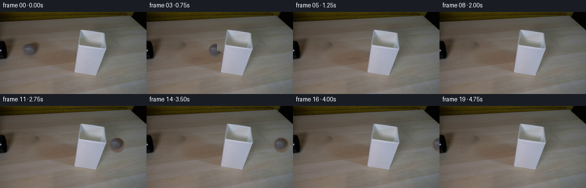
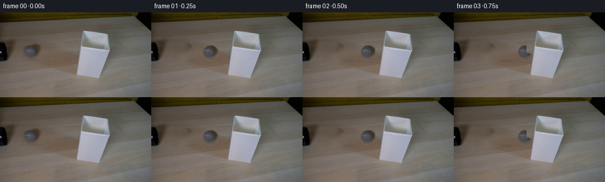
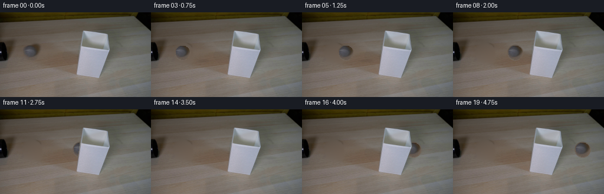
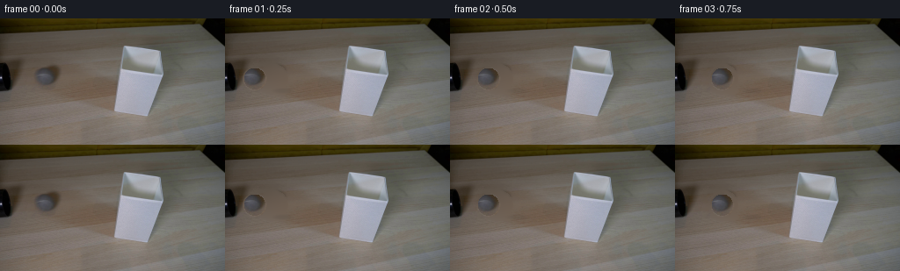
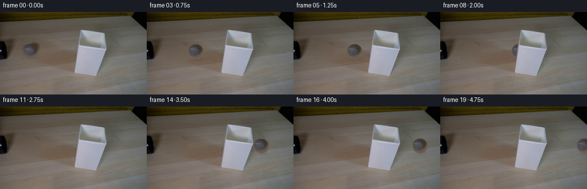
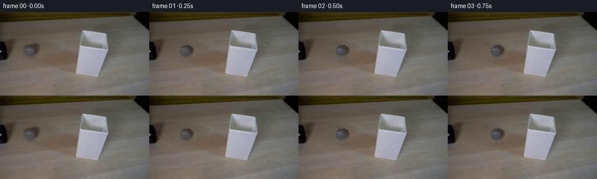

CODING AGENTS AS PIXEL WORLD MODELS
traex/DeepSeek-V4.1-Flash · 0145
点击播放 · 原生 RGB 像素
逐轮保存的候选
回放视频、检查图与代码变化。
每份候选均可单独播放。实际图片检查记录在下方工具轨迹中。
候选 01播放与检查图
点击播放 · 原生 RGB 像素

展开代码变化
--- 上一保存版本
+++ 本次保存版本
@@ -0,0 +1,168 @@
+from pathlib import Path
+
+import cv2
+import numpy as np
+from PIL import Image
+
+import artifact_io
+
+
+ROOT = Path(__file__).resolve().parent
+WIDTH, HEIGHT = 256, 144
+FRAME_COUNT, FPS = 20, 4
+
+# Measured from the photographed ball in first_frame.png.
+BALL_X, BALL_Y, BALL_R = 54.3, 68.2, 14.0
+START_X, END_X = BALL_X, 251.0
+
+
+def smoothstep(edge0, edge1, value):
+ t = np.clip((value - edge0) / (edge1 - edge0), 0.0, 1.0)
+ return t * t * (3.0 - 2.0 * t)
+
+
+def make_clean_plate(frame):
+ """Remove the photographed ball while retaining the tabletop gradient."""
+ yy, xx = np.mgrid[0:HEIGHT, 0:WIDTH]
+ removal = ((xx - BALL_X) ** 2 + (yy - BALL_Y) ** 2) <= (BALL_R + 2.2) ** 2
+ removal |= (((xx - (BALL_X + 2.0)) / 16.5) ** 2 +
+ ((yy - 82.0) / 5.0) ** 2) <= 1.0
+ mask = removal.astype(np.uint8) * 255
+
+ plate = cv2.inpaint(frame, mask, 5, cv2.INPAINT_TELEA)
+
+ # The tabletop is smooth in this small area; soften inpainting seams.
+ softened = cv2.GaussianBlur(plate, (0, 0), 1.1)
+ blend = cv2.GaussianBlur(mask.astype(np.float32) / 255.0, (0, 0), 1.6)
+ blend = np.clip(blend * 1.15, 0.0, 1.0)[..., None]
+ return np.clip(plate * (1.0 - blend) + softened * blend, 0, 255).astype(np.uint8)
+
+
+def make_ball_sprite(frame):
+ """Extract a clean, feathered ball sprite from the photographed frame."""
+ pad = 18
+ cx, cy = int(round(BALL_X)), int(round(BALL_Y))
+ x0, x1 = cx - pad, cx + pad + 1
+ y0, y1 = cy - pad, cy + pad + 1
+
+ yy, xx = np.mgrid[y0:y1, x0:x1]
+ dx = xx - BALL_X
+ dy = yy - BALL_Y
+ distance = np.hypot(dx, dy)
+ alpha = 1.0 - smoothstep(BALL_R - 1.15, BALL_R + 0.35, distance)
+
+ source = frame[y0:y1, x0:x1].astype(np.float32)
+
+ # Decontaminate the rim: sample slightly inward along each radius so the
+ # tabletop does not form a dark fringe around the moving sphere.
+ sample_dx = np.round(dx * 0.94).astype(int)
+ sample_dy = np.round(dy * 0.94).astype(int)
+ sx = np.clip(xx + sample_dx - x0, 0, source.shape[1] - 1)
+ sy = np.clip(yy + sample_dy - y0, 0, source.shape[0] - 1)
+ rim_rgb = source[sy, sx]
+ inner = distance < (BALL_R - 1.8)
+ rgb = source.copy()
+ rgb[~inner] = rim_rgb[~inner]
+
+ return rgb, alpha.astype(np.float32), (x0, y0)
+
+
+def make_lamp_mask(frame):
+ """Find the white shade so it can correctly occlude the passing ball."""
+ rgb = frame.astype(np.float32)
+ luminance = rgb @ np.array([0.299, 0.587, 0.114], dtype=np.float32)
+ region = np.zeros((HEIGHT, WIDTH), dtype=np.uint8)
+ region[25:114, 124:192] = 1
+
+ bright = ((luminance > 105.0) & (region > 0)).astype(np.uint8)
+ count, labels, stats, _ = cv2.connectedComponentsWithStats(bright, 8)
+ if count > 1:
+ component = 1 + int(np.argmax(stats[1:, cv2.CC_STAT_AREA]))
+ bright = (labels == component).astype(np.uint8)
+
+ kernel = np.ones((3, 3), np.uint8)
+ bright = cv2.morphologyEx(bright, cv2.MORPH_CLOSE, kernel, iterations=2)
+ contours, _ = cv2.findContours(bright, cv2.RETR_EXTERNAL,
+ cv2.CHAIN_APPROX_SIMPLE)
+ filled = np.zeros_like(bright)
+ if contours:
+ cv2.drawContours(filled, contours, -1, 1, cv2.FILLED)
+ filled = cv2.dilate(filled, kernel, iterations=1)
+ return filled.astype(bool)
+
+
+def add_contact_shadow(canvas, center_x):
+ yy, xx = np.mgrid[0:HEIGHT, 0:WIDTH]
+ rx, ry = 14.5, 3.8
+ distance = ((xx - (center_x + 1.7)) / rx) ** 2 + ((yy - 82.0) / ry) ** 2
+ weight = np.clip(1.0 - distance, 0.0, 1.0)
+ weight = weight * weight * (3.0 - 2.0 * weight)
+ weight *= 0.20
+
+ # Cool, neutral shadow rather than a flat black oval.
+ shadow_tint = np.array([0.72, 0.75, 0.80], dtype=np.float32)
+ factor = 1.0 - weight[..., None] * (1.0 - shadow_tint)
+ return np.clip(canvas.astype(np.float32) * factor, 0, 255)
+
+
+def composite_ball(canvas, sprite, alpha, origin, center_x):
+ rgb, _, _ = sprite
+ h, w = alpha.shape
+ x0 = int(round(center_x - (BALL_X - origin[0])))
+ y0 = 0
+
+ dst_x0 = x0 + origin[0]
+ dst_y0 = y0 + origin[1]
+ dst_x1, dst_y1 = dst_x0 + w, dst_y0 + h
+
+ src_x0 = max(0, -dst_x0)
+ src_y0 = max(0, -dst_y0)
+ src_x1 = min(w, WIDTH - dst_x0)
+ src_y1 = min(h, HEIGHT - dst_y0)
+ if src_x0 >= src_x1 or src_y0 >= src_y1:
+ return canvas
+
+ dst_x0 += src_x0
+ dst_y0 += src_y0
+ dst_x1 = dst_x0 + (src_x1 - src_x0)
+ dst_y1 = dst_y0 + (src_y1 - src_y0)
+
+ a = alpha[src_y0:src_y1, src_x0:src_x1, None]
+ src = rgb[src_y0:src_y1, src_x0:src_x1]
+ dst = canvas[dst_y0:dst_y1, dst_x0:dst_x1]
+ canvas[dst_y0:dst_y1, dst_x0:dst_x1] = np.clip(
+ src * a + dst * (1.0 - a), 0, 255
+ )
+ return canvas
+
+
+def main():
+ original = np.asarray(Image.open(ROOT / "first_frame.png").convert("RGB"))
+ assert original.shape == (HEIGHT, WIDTH, 3)
+
+ clean_plate = make_clean_plate(original)
+ sprite_rgb, sprite_alpha, origin = make_ball_sprite(original)
+ sprite = (sprite_rgb, sprite_alpha, origin)
+ lamp_mask = make_lamp_mask(original)
+
+ frames = np.empty((FRAME_COUNT, HEIGHT, WIDTH, 3), dtype=np.uint8)
+ frames[0] = original
+
+ for index in range(1, FRAME_COUNT):
+ progress = index / (FRAME_COUNT - 1)
+ center_x = START_X + (END_X - START_X) * progress
+
+ canvas = clean_plate.astype(np.float32)
+ canvas = add_contact_shadow(canvas, center_x)
+ canvas = composite_ball(canvas, sprite, sprite_alpha, origin, center_x)
+ frame = np.clip(canvas, 0, 255).astype(np.uint8)
+
+ # The shade is nearer to the camera than the ball's tabletop path.
+ frame[lamp_mask] = original[lamp_mask]
+ frames[index] = frame
+
+ artifact_io.save(frames, ROOT)
+
+
+if __name__ == "__main__":
+ main()
候选 02播放与检查图
点击播放 · 原生 RGB 像素


展开代码变化
--- 上一保存版本
+++ 本次保存版本
@@ -24,15 +24,28 @@
def make_clean_plate(frame):
"""Remove the photographed ball while retaining the tabletop gradient."""
yy, xx = np.mgrid[0:HEIGHT, 0:WIDTH]
- removal = ((xx - BALL_X) ** 2 + (yy - BALL_Y) ** 2) <= (BALL_R + 2.2) ** 2
+ removal = ((xx - BALL_X) ** 2 + (yy - BALL_Y) ** 2) <= (BALL_R + 3.0) ** 2
removal |= (((xx - (BALL_X + 2.0)) / 16.5) ** 2 +
((yy - 82.0) / 5.0) ** 2) <= 1.0
mask = removal.astype(np.uint8) * 255
- plate = cv2.inpaint(frame, mask, 5, cv2.INPAINT_TELEA)
+ # The tabletop under the ball is close to a smooth two-dimensional ramp.
+ # Fit that ramp from a clean annulus and use it to avoid inpainting halos.
+ annulus = (((xx - BALL_X) ** 2 + (yy - BALL_Y) ** 2) > (BALL_R + 5.0) ** 2)
+ annulus &= (((xx - BALL_X) ** 2 + (yy - BALL_Y) ** 2) < (BALL_R + 11.0) ** 2)
+ annulus &= (yy > 48) & (yy < 90) & (xx > 25) & (xx < 84)
+ terms = np.stack(
+ [np.ones_like(xx), xx, yy, xx * xx, yy * yy, xx * yy], axis=-1
+ ).astype(np.float32)
+ design = terms[annulus]
+ plate = frame.astype(np.float32).copy()
+ for channel in range(3):
+ coeff = np.linalg.lstsq(design, frame[..., channel][annulus], rcond=None)[0]
+ fitted = terms @ coeff
+ plate[..., channel] = np.where(removal, fitted, frame[..., channel])
# The tabletop is smooth in this small area; soften inpainting seams.
- softened = cv2.GaussianBlur(plate, (0, 0), 1.1)
+ softened = cv2.GaussianBlur(plate, (0, 0), 1.3)
blend = cv2.GaussianBlur(mask.astype(np.float32) / 255.0, (0, 0), 1.6)
blend = np.clip(blend * 1.15, 0.0, 1.0)[..., None]
return np.clip(plate * (1.0 - blend) + softened * blend, 0, 255).astype(np.uint8)
@@ -72,9 +85,9 @@
rgb = frame.astype(np.float32)
luminance = rgb @ np.array([0.299, 0.587, 0.114], dtype=np.float32)
region = np.zeros((HEIGHT, WIDTH), dtype=np.uint8)
- region[25:114, 124:192] = 1
+ region[27:114, 126:190] = 1
- bright = ((luminance > 105.0) & (region > 0)).astype(np.uint8)
+ bright = ((luminance > 128.0) & (region > 0)).astype(np.uint8)
count, labels, stats, _ = cv2.connectedComponentsWithStats(bright, 8)
if count > 1:
component = 1 + int(np.argmax(stats[1:, cv2.CC_STAT_AREA]))
@@ -88,6 +101,10 @@
if contours:
cv2.drawContours(filled, contours, -1, 1, cv2.FILLED)
filled = cv2.dilate(filled, kernel, iterations=1)
+ # Restrict restoration to the shade itself, not the floor around it.
+ shade_region = np.zeros((HEIGHT, WIDTH), dtype=np.uint8)
+ shade_region[29:113, 127:189] = 1
+ filled &= shade_region
return filled.astype(bool)
候选 03播放与检查图
候选 04播放与检查图
点击播放 · 原生 RGB 像素


展开代码变化
--- 上一保存版本
+++ 本次保存版本
@@ -125,11 +125,8 @@
def composite_ball(canvas, sprite, alpha, origin, center_x):
rgb, _, _ = sprite
h, w = alpha.shape
- x0 = int(round(center_x - (BALL_X - origin[0])))
- y0 = 0
-
- dst_x0 = x0 + origin[0]
- dst_y0 = y0 + origin[1]
+ dst_x0 = int(round(center_x - BALL_R)) - origin[0]
+ dst_y0 = origin[1]
dst_x1, dst_y1 = dst_x0 + w, dst_y0 + h
src_x0 = max(0, -dst_x0)
候选 05播放与检查图
点击播放 · 原生 RGB 像素


展开代码变化
--- 上一保存版本
+++ 本次保存版本
@@ -125,7 +125,7 @@
def composite_ball(canvas, sprite, alpha, origin, center_x):
rgb, _, _ = sprite
h, w = alpha.shape
- dst_x0 = int(round(center_x - BALL_R)) - origin[0]
+ dst_x0 = int(round(center_x - (BALL_X - origin[0])))
dst_y0 = origin[1]
dst_x1, dst_y1 = dst_x0 + w, dst_y0 + h
可观测工具轨迹
实际执行的命令与返回图片。
命令 1exit 0
/bin/bash -c "pwd && rg --files -g '"'!*__pycache__*'"' -g '"'!*.pyc'"' | sed -n '1,200p'"
命令 2exit 0
/bin/bash -c "sed -n '1,240p' prompt.txt"
命令 3exit 0
/bin/bash -c "sed -n '1,280p' GENERATION_RULES.md"
命令 4exit 0
/bin/bash -c "find . -maxdepth 2 -type f -printf '%p\\t%s bytes\\n' | sort | sed -n '1,240p'"
命令 5exit 0
/bin/bash -c "sed -n '1,260p' artifact_io.py"
命令 6exit 0
/bin/bash -c "python - <<'PY'
from PIL import Image
import numpy as np
im=np.asarray(Image.open('first_frame.png').convert('RGB'))
print(im.shape, im.dtype)
print('global', im.min((0,1)), im.max((0,1)), im.mean((0,1)), np.median(im.reshape(-1,3),0))
# unique quantized colors
q=(im//16)*16
u,c=np.unique(q.reshape(-1,3),axis=0,return_counts=True)
for i in np.argsort(c)[-30:][::-1]: print(tuple(u[i]), c[i], round(c[i]/im.shape[0]/im.shape[1]*100,2))
PY"命令 7exit 0
/bin/bash -c "python - <<'PY' import importlib.util for x in ['cv2','scipy','skimage','numpy','PIL']: print(x, bool(importlib.util.find_spec(x))) PY"
命令 8exit 0
/bin/bash -c "python - <<'PY'
from PIL import Image
import numpy as np
im=np.asarray(Image.open('first_frame.png').convert('RGB'))
# summary blocks 16x8
h,w,_=im.shape
for by in range(0,h,8):
row=''
for bx in range(0,w,8):
p=im[by:by+8,bx:bx+8].mean((0,1))
r,g,b=p
mx=max(p); mn=min(p)
if mx<40: ch='K'
elif mx<80: ch='d'
elif mx<120: ch='m'
elif mx<170: ch='l'
elif mx<220: ch='L'
else: ch='W'
if mx-mn>30:
if r>g*1.15 and r>b*1.15: ch='R'
elif g>r*1.08: ch='G'
elif b>r*1.15: ch='B'
elif r>g*1.08 and g>b*1.05: ch='Y'
row+=ch
print(f'{by:3d} '+row)
PY"命令 9exit 0
/bin/bash -c "python - <<'PY'
from PIL import Image
import numpy as np
im=np.asarray(Image.open('first_frame.png').convert('RGB')).astype(float)
h,w,_=im.shape
chars=' .:-=+*#%@'
# luminance 4x2 blocks, 128x72
for y in range(0,h,2):
s=''
for x in range(0,w,2):
p=im[y:y+2,x:x+2].mean((0,1))
lum=p@[.299,.587,.114]
s+=chars[min(9,int(lum/256*10))]
print(f'{y:03d} {s}')
PY"命令 10exit 0
/bin/bash -c "python - <<'PY'
from PIL import Image
import numpy as np
im=np.asarray(Image.open('first_frame.png').convert('RGB'))
h,w,_=im.shape
# print mean colors at grid every 16x8
for y in range(0,h,8):
print('y',y)
for x in range(0,w,16):
p=im[y:y+8,x:x+16].mean((0,1)).astype(int)
print(f'{x:3}:{p[0]:3},{p[1]:3},{p[2]:3}',end=' ')
print()
PY"命令 11exit 0
/bin/bash -c "python - <<'PY'
from PIL import Image
import numpy as np
im=np.asarray(Image.open('first_frame.png').convert('RGB'))
lum=im@np.array([.299,.587,.114])
for thr in [10,20,30,40,50,60,70,80]:
m=lum<thr
ys,xs=np.where(m)
print(thr, m.sum(), (xs.min(),xs.max(),ys.min(),ys.max()) if len(xs) else None, 'bbox mass rows', sorted(zip(*np.unique(ys,return_counts=True)), key=lambda z:z[1], reverse=True)[:5])
# black segments by row, for lum<55 grouped
for y in range(0,144,4):
m=lum[y]<55
idx=np.flatnonzero(m)
seg=[]
if len(idx):
cuts=np.flatnonzero(np.diff(idx)>1)+1
for a,b in zip(np.r_[0,cuts],np.r_[cuts,len(idx)]):
if b-a>=2: seg.append((int(idx[a]),int(idx[b-1])))
print(f'{y:3}:',seg)
PY"命令 12exit 0
/bin/bash -c "python - <<'PY'
from PIL import Image
import numpy as np
im=np.asarray(Image.open('first_frame.png').convert('RGB')).astype(int)
# Detailed categorical map x40:130, y40:105, 1 px per char, RGB nearest semantic bins
chars=''
def cat(p):
r,g,b=p
l=.299*r+.587*g+.114*b
mx=max(p); mn=min(p); sat=mx-mn
if l<35: return 'K'
if l<55: return 'k'
if l<75: return 'd'
if l<95: return 'm'
if l<115: return 'n'
if l<135: return 'l'
if l<155: return 'L'
if l<175: return 'W'
if l<195: return 'w'
return '@'
for y in range(40,106):
s=''
for x in range(40,131):
s+=cat(im[y,x])
print(f'{y:03d} {s}')
PY"命令 13exit 0
/bin/bash -c "python - <<'PY'
import cv2, numpy as np
from PIL import Image
im=cv2.imread('first_frame.png')
g=cv2.cvtColor(im,cv2.COLOR_BGR2GRAY)
# CLAHE then canny; show edge chars over 2x2 blocks with density
for mode,arr in [('raw',g),('clahe',cv2.createCLAHE(2.0,(8,8)).apply(g))]:
e=cv2.Canny(arr,25,70)
# remove outer
print('\\n',mode,'edges',e.sum()/255)
for y in range(0,144,2):
s=''
for x in range(0,256,2):
n=(e[y:y+2,x:x+2]>0).sum()
s += ' ' if n==0 else ('.' if n==1 else ('+' if n==2 else '#'))
print(f'{y:03d} {s}')
PY"命令 14exit 0
/bin/bash -c "python - <<'PY'
from PIL import Image
import numpy as np
im=np.asarray(Image.open('first_frame.png').convert('RGB')).astype(int)
# print compact pixel colors every 4 x for selected rows
for y in [30,35,40,45,50,55,60,65,70,75,80,85,90,95,100,105,110,115,120,125,130,135,140]:
print('\\ny=',y)
for x in range(0,256,8):
p=im[y:y+2,x:x+2].mean((0,1)).astype(int)
print(f'{x:3d}:{p[0]:3d},{p[1]:3d},{p[2]:3d}', end=' ')
print()
PY"命令 15exit 0
/bin/bash -c "python - <<'PY'
from PIL import Image
import numpy as np
im=np.asarray(Image.open('first_frame.png').convert('RGB'))
# save nearest-neighbor and crops for internal numeric viewing? Can't visually inspect tools disabled but can use ASCII after edge/seg
# detect tube via dark (relative to local table) in y30..115 x125..200; dump rows threshold
lum=im.astype(float)@np.array([.299,.587,.114])
for y in range(28,114,2):
vals=lum[y,120:205]
# ascii high contrast centered relative 80-140
s=''
for x,v in enumerate(vals):
# tube black low, shade sphere bright; use bins
if v<45:c='@'
elif v<60:c='#'
elif v<75:c='O'
elif v<90:c='o'
elif v<105:c='+'
elif v<125:c='-'
elif v<150:c='.'
else:c=' '
s+=c
print(f'{y:3d} {s}')
PY"命令 16exit 0
/bin/bash -c "python - <<'PY'
from PIL import Image
import numpy as np
im=np.asarray(Image.open('first_frame.png').convert('RGB'))
# cluster tube and lampshade via kmeans cv2 maybe
import cv2
Z=im.reshape(-1,3).astype(np.float32)
crit=(cv2.TERM_CRITERIA_EPS+cv2.TERM_CRITERIA_MAX_ITER,100,.2)
K=12
_,lab,c=cv2.kmeans(Z,K,None,crit,10,cv2.KMEANS_PP_CENTERS)
lab=lab.reshape(144,256)
for i in range(K):
m=lab==i; ys,xs=np.where(m)
print(i, np.round(c[i]).astype(int), m.sum(), (xs.min(),xs.max(),ys.min(),ys.max()))
# map region tube with cluster labels
# x 120:210 y 25:115, 1 char each x, every 2 y cluster label hex
for y in range(24,116,2):
s=''
for x in range(115,211):
v=lab[y,x]
s+='0123456789AB'[v]
print(f'{y:3d} {s}')
PY"命令 17exit 0
/bin/bash -c "python - <<'PY'
import cv2,numpy as np
from PIL import Image
im=cv2.imread('first_frame.png')
# upscale 4x nearest and sharpen? Save crops only, no visual tool. Try contour statistics in dark region.
g=cv2.cvtColor(im,cv2.COLOR_BGR2GRAY)
for th in [50,55,60,65,70,75,80,85,90,95,100,105,110]:
m=(g<th).astype(np.uint8)*255
n,lab,stats,cents=cv2.connectedComponentsWithStats(m,8)
comps=[]
for i in range(1,n):
x,y,w,h,a=stats[i]
if a>=20: comps.append((a,x,y,w,h,tuple(np.round(cents[i],1))))
print(th,sorted(comps,reverse=True)[:8])
PY"命令 18exit 0
/bin/bash -c "python - <<'PY'
from PIL import Image
import numpy as np
im=np.asarray(Image.open('first_frame.png').convert('RGB'))
# print small crops as hex grid, x48-68 y52-82 exact RGB
for y in range(52,83):
s=''
for x in range(48,70):
p=im[y,x]
l=int(.299*p[0]+.587*p[1]+.114*p[2])
if l<30:c='@'
elif l<45:c='#'
elif l<60:c='O'
elif l<75:c='o'
elif l<90:c='+'
elif l<105:c='-'
elif l<120:c='.'
elif l<140:c=' '
else:c='W'
s+=c
print(f'{y:3d} {s}')
print('exact row 60')
for x in range(40,80): print(x,tuple(im[60,x]),end='; ')
print()
PY"命令 19exit 0
/bin/bash -c "python - <<'PY'
import cv2, numpy as np
im=cv2.imread('first_frame.png')
g=cv2.cvtColor(im,cv2.COLOR_BGR2GRAY)
for lo,hi in [(15,40),(20,60),(30,90),(40,120),(50,150)]:
e=cv2.Canny(g,lo,hi)
lines=cv2.HoughLinesP(e,1,np.pi/180,threshold=15,minLineLength=15,maxLineGap=4)
print('\\n',lo,hi, None if lines is None else len(lines))
if lines is not None:
ls=[]
for l in lines[:,0]:
x1,y1,x2,y2=map(int,l); ln=((x2-x1)**2+(y2-y1)**2)**.5; ang=np.degrees(np.arctan2(y2-y1,x2-x1))
ls.append((round(ln,1),round(ang,1),(x1,y1,x2,y2)))
for z in sorted(ls,reverse=True)[:25]: print(z)
PY"命令 20exit 0
/bin/bash -c "python - <<'PY'
from PIL import Image
import numpy as np
im=np.asarray(Image.open('first_frame.png').convert('RGB'))
for y in range(30,111):
s=''
for x in range(0,111):
p=im[y,x]; l=.299*p[0]+.587*p[1]+.114*p[2]
if l<12:c='@'
elif l<25:c='#'
elif l<40:c='O'
elif l<55:c='o'
elif l<70:c='+'
elif l<85:c='-'
elif l<100:c='.'
elif l<115:c=' '
elif l<130:c=':'
else:c='W'
s+=c
print(f'{y:3d} {s}')
PY"命令 21exit 0
/bin/bash -c "python - <<'PY'
from PIL import Image
import numpy as np
im=np.asarray(Image.open('first_frame.png').convert('RGB')).astype(float)
# Print color difference from local horizontal/vertical smooth baseline, crop around tube x120:205 y20:116.
# Sobel gradient magnitude and direction
import cv2
g=cv2.cvtColor(im.astype(np.uint8),cv2.COLOR_RGB2GRAY).astype(float)
gx=cv2.Sobel(g,cv2.CV_64F,1,0,ksize=3); gy=cv2.Sobel(g,cv2.CV_64F,0,1,ksize=3)
mag=np.hypot(gx,gy)
# char with high mag; subsample 1x2? map
for y in range(20,116):
s=''
for x in range(112,210):
v=mag[y,x]
# exclude static texture maybe direction not needed
if v<50:c=' '
elif v<100:c='.'
elif v<180:c='+'
elif v<300:c='*'
elif v<500:c='#'
else:c='@'
s+=c
print(f'{y:3d} {s}')
PY"命令 22exit 0
/bin/bash -c "python - <<'PY'
from PIL import Image
import numpy as np, cv2
im=np.asarray(Image.open('first_frame.png').convert('RGB'))
g=cv2.cvtColor(im,cv2.COLOR_RGB2GRAY)
# line model candidates endpoints x 130 y31, 140 y106 and x 185 y64 etc. estimate centerline from tube region based gradient x positions
# print max gradient x per y in x120:205
mag=np.hypot(cv2.Sobel(g,cv2.CV_64F,1,0,3),cv2.Sobel(g,cv2.CV_64F,0,1,3))
for y in range(28,113,2):
vals=mag[y,115:205]
ids=np.argsort(vals)[-6:][::-1]
print(y,[(int(115+i),round(vals[i],0)) for i in ids])
PY"命令 23exit 0
/bin/bash -c "python - <<'PY'
from PIL import Image
import numpy as np
im=np.asarray(Image.open('first_frame.png').convert('RGB'))
# Find white lampshade approximate bright mask
p=im.astype(float); lum=p@[.299,.587,.114]
m=(lum>145)&(np.indices(lum.shape)[1]>120)&(np.indices(lum.shape)[1]<200)&(np.indices(lum.shape)[0]>25)&(np.indices(lum.shape)[0]<120)
ys,xs=np.where(m)
print('bright bounds',xs.min(),xs.max(),ys.min(),ys.max(),'mean',p[m].mean(0),'count',len(xs))
# per row extents and weighted center
for y in range(28,115,2):
ii=np.flatnonzero(m[y])
if len(ii): print(y,ii.min(),ii.max(),len(ii), np.mean(ii), 'peak',lum[y,ii].max())
# list suspected ball at x~55 y60 based crop, compute mask disk candidate
PY"命令 24exit 0
/bin/bash -c "python - <<'PY'
from PIL import Image
import numpy as np, cv2
im=np.asarray(Image.open('first_frame.png').convert('RGB'))
# print crop 115:205 20:120 color categories hue/sat to distinguish background/lamp/ball
hsv=cv2.cvtColor(im,cv2.COLOR_RGB2HSV)
# perhaps ball at 53,62: mean disk r9 compare annulus, color
for cy,cx,r in [(60,59,9),(60,59,12),(100,150,25),(75,150,35)]:
yy,xx=np.ogrid[:144,:256]; d=np.hypot(xx-cx,yy-cy)
for rr in [r,r+5,r+10]:
pass
m=d<r; a=(d>=r+2)&(d<r+6)
print((cy,cx,r),'in',im[m].mean(0),'out',im[a].mean(0),'std',im[m].std(0))
# print row 60/61 x45:75 rgb and hue sat
for y in [58,59,60,61,62,63,64,65,66]:
print(y,[(x,tuple(im[y,x])) for x in range(45,72,2)])
PY"命令 25exit 0
/bin/bash -c "python - <<'PY'
from PIL import Image
import numpy as np
im=np.asarray(Image.open('first_frame.png').convert('RGB')).astype(float)
# sample tube center color along x positions y model maybe y= 32 + (x-130)*(-?); tube runs x132 y106 to x186 y65. fit edges manually
# The tube is diagonal lower-left to upper-right. estimate endpoints / center line from high gradients shown
for x in [130,132,135,140,145,150,155,160,165,170,175,180,185,190]:
# fit y on lower/upper edges? choose y corresponding line from (131,105) to (185,65)
y=int(round(105 + (x-131)*(65-105)/(185-131)))
print(x,y,tuple(im[y,x].astype(int)))
# crop table sample values
PY"命令 26exit 0
/bin/bash -c "python - <<'PY'
from PIL import Image
import numpy as np, cv2
im=np.asarray(Image.open('first_frame.png').convert('RGB')).astype(np.float32)
# smooth chroma / make grayscale detail with strong luminance range for visualizing? Use unsharp+local contrast and save crop, then ascii at 1 char per pixel
g=cv2.cvtColor(im.astype(np.uint8),cv2.COLOR_RGB2GRAY).astype(float)
cl=cv2.createCLAHE(clipLimit=4,tileGridSize=(4,4)).apply(g.astype(np.uint8))
for y in range(28,114):
s=''
for x in range(120,205):
v=cl[y,x]
if v<35:c='@'
elif v<55:c='#'
elif v<75:c='O'
elif v<95:c='o'
elif v<115:c='+'
elif v<135:c='-'
elif v<155:c='.'
elif v<175:c=' '
elif v<200:c=':'
else:c='W'
s+=c
print(f'{y:3d} {s}')
PY"命令 27exit 0
/bin/bash -c "python - <<'PY'
from PIL import Image
import numpy as np
im=np.asarray(Image.open('first_frame.png').convert('RGB')).astype(float)
lum=im@np.array([.299,.587,.114])
# print row profiles x30:90 at various y
for y in range(48,84,2):
vals=lum[y,30:90]
print(f'y={y:3d}', ' '.join(f'{int(v):3d}' for v in vals[::2]))
# col profiles
for x in range(35,76,4):
vals=lum[45:90,x]
print(f'x={x:3d}', ' '.join(f'{int(v):3d}' for v in vals[::2]))
PY"命令 28exit 0
/bin/bash -c "python - <<'PY'
from PIL import Image
import numpy as np
im=np.asarray(Image.open('first_frame.png').convert('RGB')).astype(float)
# Look for differences from median row/col in suspected ball region. print RGB plus local table baseline (bilinear from outside disk)
# detect circle via Hough
import cv2
g=cv2.cvtColor(im.astype(np.uint8),cv2.COLOR_RGB2GRAY)
for p2 in [5,8,10,12,15,20]:
c=cv2.HoughCircles(g,cv2.HOUGH_GRADIENT,dp=1,minDist=8,param1=30,param2=p2,minRadius=3,maxRadius=30)
print(p2,None if c is None else np.round(c[0],1)[:10])
PY"命令 29exit 0
/bin/bash -c "python - <<'PY'
from PIL import Image
import numpy as np
im=np.asarray(Image.open('first_frame.png').convert('RGB')).astype(float)
# ball at center 51.5,60.5 radius 15 per Hough. Check radial color stats and estimate boundary
lum=im@np.array([.299,.587,.114])
y,x=np.ogrid[:144,:256]; d=np.hypot(x-51.5,y-60.5)
for r0 in range(0,23,2):
m=(d>=r0)&(d<r0+2)
print(r0,m.sum(),np.round(im[m].mean(0),1),round(lum[m].mean(),1),np.round(im[m].std(0),1))
# compare ring likely ball surface vs background
# inspect pixels from expected ball only based Hough maybe real ball at 51,60 r~15
PY"命令 30exit 0
/bin/bash -c "python - <<'PY'
from PIL import Image
import numpy as np, cv2
im=np.asarray(Image.open('first_frame.png').convert('RGB'))
Z=im.reshape(-1,3).astype(np.float32)
K=10
_,lab,c=cv2.kmeans(Z,K,None,(cv2.TERM_CRITERIA_EPS+cv2.TERM_CRITERIA_MAX_ITER,80,.2),8,cv2.KMEANS_PP_CENTERS)
lab=lab.reshape(144,256)
# sort clusters by luminance
order=np.argsort(c@[.299,.587,.114])
sym='0123456789'
for y in range(0,144,2):
s=''
for x in range(0,256,2):
# majority label in 2x2
vals,cts=np.unique(lab[y:y+2,x:x+2],return_counts=True)
s+=sym[np.where(order==vals[np.argmax(cts)])[0][0]]
print(f'{y:3d} {s}')
print('clusters by lum')
for i in order: print(sym[np.where(order==i)[0][0]],np.round(c[i]).astype(int), (lab==i).sum())
PY"命令 31exit 0
/bin/bash -c "python - <<'PY'
from PIL import Image
import numpy as np
im=np.asarray(Image.open('first_frame.png').convert('RGB')).astype(float)
# sample ball candidate center and local baseline
# inferred ball circle from Hough (51.5,60.5,r15); background if removed likely tabletop gradient similar to row 50 x50 and below y78.
for y in [48,50,52,54,56,58,60,62,64,66,68,70,72,74,76,78,80,82]:
print(y, [tuple(im[y,x].astype(int)) for x in range(35,71,5)])
PY"命令 32exit 0
/bin/bash -c "python - <<'PY'
import cv2,numpy as np
from PIL import Image
im=np.asarray(Image.open('first_frame.png').convert('RGB'))
g=cv2.cvtColor(im,cv2.COLOR_RGB2GRAY)
# threshold candidates within left table region and component stats
for th in range(70,101,2):
m=((g<th).astype(np.uint8))*255
n,l,st,ce=cv2.connectedComponentsWithStats(m,8)
comps=[]
for i in range(1,n):
x,y,w,h,a=st[i]
if 30<=x<=100 and 35<=y<=95 and a>20: comps.append((a,x,y,w,h,tuple(np.round(ce[i],1))))
print(th,comps)
PY"命令 33exit 0
/bin/bash -c "python - <<'PY'
from PIL import Image
import numpy as np
im=np.asarray(Image.open('first_frame.png').convert('RGB')).astype(float)
# Print color over ball in normalized local table luminance baseline estimated from left/right neighbor pixels same y; grayscale deviation map crop x33:73 y48:82
# table background itself is gradient; compare RGB chroma via B-R and saturation
for y in range(48,83):
s=''
for x in range(33,74):
r,g,b=im[y,x]; l=.299*r+.587*g+.114*b
# map hue: ball gray should b-r near 0, table brown b-r ~ -20
d=b-r
if l<45:c='@'
elif l<60:c='#'
elif l<75:c='O'
elif l<90:c='o'
elif l<105:c='+'
elif l<120:c='-'
elif l<135:c='.'
else:c=' '
if d>-5 and l<95: c=c.lower() if c"'!='"' ' else 'g'
s+=c
print(f'{y:3d} {s}')
PY"命令 34exit 0
/bin/bash -c "python - <<'PY'
from PIL import Image
import numpy as np
im=np.asarray(Image.open('first_frame.png').convert('RGB')).astype(float)
# ball center detect from dark circle likely around (55,62), radius 17. Use gradient around radial; output radial color and luma at angles
cy,cx=62,55
for r in range(0,26):
vals=[]
for a in np.linspace(0,2*np.pi,72,endpoint=False):
x=int(round(cx+r*np.cos(a))); y=int(round(cy+r*np.sin(a)))
vals.append(im[y,x]@np.array([.299,.587,.114]))
print(r,round(np.mean(vals),1),round(np.std(vals),1),round(min(vals),1),round(max(vals),1))
PY"命令 35exit 0
/bin/bash -c "python - <<'PY'
import numpy as np, cv2
from PIL import Image
im=np.asarray(Image.open('first_frame.png').convert('RGB')).astype(np.float32)
# Print crop x25:90 y40:90 as tiny color classification (every pixel, x scaled 1)
for y in range(42,90):
s=''
for x in range(25,92):
p=im[y,x]
r,g,b=p
l=.299*r+.587*g+.114*b
# classify based on hue difference
if b-r>4 and l<100: c='B'
elif r-b>15 and l<90:c='y'
elif r-b>10 and l<105:c='t'
elif l<50:c='@'
elif l<65:c='#'
elif l<80:c='O'
elif l<95:c='o'
elif l<110:c='+'
elif l<125:c='-'
elif l<140:c='.'
else:c=' '
s+=c
print(f'{y:3d} {s}')
PY"命令 36exit 0
/bin/bash -c "python - <<'PY'
from PIL import Image
import numpy as np
im=np.asarray(Image.open('first_frame.png').convert('RGB')).astype(float)
# fit circle boundary where dark threshold crosses using radial samples for centers candidate around 55,63
for cy,cx in [(62,55),(61,55),(63,55),(62,56),(62,57)]:
best=[]
for r in np.arange(8,25,.25):
vals=[]
for a in np.linspace(0,2*np.pi,180,endpoint=False):
x=int(round(cx+r*np.cos(a))); y=int(round(cy+r*np.sin(a)))
vals.append(im[y,x]@np.array([.299,.587,.114]))
best.append((r,np.mean(vals)))
# min radial luma outside? print r where mean jumps
print('\\ncenter',cy,cx)
print(' '.join(f'{r:.0f}:{v:.0f}' for r,v in best[::2]))
PY"命令 37exit 0
/bin/bash -c "python - <<'PY'
from PIL import Image
import numpy as np
im=np.asarray(Image.open('first_frame.png').convert('RGB')).astype(float)
# inspect actual image metadata
from PIL import Image as I
x=I.open('first_frame.png')
print(x.info)
PY"命令 38exit 0
/bin/bash -c "python - <<'PY'
from PIL import Image
import numpy as np
im=np.asarray(Image.open('first_frame.png').convert('RGB'))
# dump candidate ball pixels and background stats in compact rows; print x30:80 every 2px values luma
for y in range(50,80,2):
print(f'{y:3d}', ' '.join(f'{int(.299*im[y,x,0]+.587*im[y,x,1]+.114*im[y,x,2]):3d}' for x in range(32,82,2)))
PY"命令 39exit 0
/bin/bash -c "python - <<'PY'
from PIL import Image
import numpy as np
im=np.asarray(Image.open('first_frame.png').convert('RGB')).astype(np.float32)
# print coordinates for dark objects and bright objects using row extents at thresholds, every row
for y in range(0,144):
row=im[y]
lum=row@[.299,.587,.114]
# dark contiguous runs < 30 with length>=5
m=lum<35
idx=np.flatnonzero(m)
runs=[]
if len(idx):
cuts=np.flatnonzero(np.diff(idx)>1)+1
for a,b in zip(np.r_[0,cuts],np.r_[cuts,len(idx)]):
if idx[b-1]-idx[a]+1>=4: runs.append((int(idx[a]),int(idx[b-1])))
if runs and (y%2==0): print(y,runs)
PY"命令 40exit 0
/bin/bash -c "python - <<'PY'
from PIL import Image
import numpy as np
im=np.asarray(Image.open('first_frame.png').convert('RGB'))
# exact colors and locations in suspected ball at x40:70 y55:80 using deviation from row background estimate linear fit using left 5/right 5
lum=im.astype(float)@np.array([.299,.587,.114])
# estimate baseline for each row based x=20:35 and x=75:85
for y in range(52,82,2):
a=lum[y,20:35].mean(); b=lum[y,75:85].mean()
base=a+(b-a)*((np.arange(35,75)-20)/(75-20))
dev=lum[y,35:75]-base
print(f'{y:3d}', ' '.join(f'{int(v):+4d}' for v in dev))
PY"命令 41exit 0
/bin/bash -c "python - <<'PY'
from PIL import Image
import numpy as np, cv2
im=np.asarray(Image.open('first_frame.png').convert('RGB'))
# Let's render enlarged crop to .tmp and maybe use sixel impossible. Instead edge direction ascii: gradients arrows
g=cv2.cvtColor(im,cv2.COLOR_RGB2GRAY).astype(float)
gx=cv2.Sobel(g,cv2.CV_64F,1,0,3); gy=cv2.Sobel(g,cv2.CV_64F,0,1,3)
mag=np.hypot(gx,gy)
for y in range(48,84):
s=''
for x in range(32,80):
v=mag[y,x]; a=(np.degrees(np.arctan2(gy[y,x],gx[y,x]))+180)%180
if v<150:c=' '
elif a<22.5 or a>=157.5:c='|' # vertical edge (gradient horiz)
elif a<67.5:c='/'
elif a<112.5:c='-'
else:c='\\\\'
s+=c
print(f'{y:3d} {s}')
PY"命令 42exit 0
/bin/bash -c "python - <<'PY'
from PIL import Image
import numpy as np, cv2
im=np.asarray(Image.open('first_frame.png').convert('RGB'))
g=cv2.cvtColor(im,cv2.COLOR_RGB2GRAY).astype(float)
gx=cv2.Sobel(g,cv2.CV_64F,1,0,3); gy=cv2.Sobel(g,cv2.CV_64F,0,1,3)
mag=np.hypot(gx,gy)
for y in range(48,84):
s=''
for x in range(32,80):
v=mag[y,x]; a=(np.degrees(np.arctan2(gy[y,x],gx[y,x]))+180)%180
if v<60:c=' '
elif a<22.5 or a>=157.5:c='|'
elif a<67.5:c='/'
elif a<112.5:c='-'
else:c='\\\\'
s+=c
print(f'{y:3d} {s}')
PY"命令 43exit 0
/bin/bash -c "python - <<'PY'
from PIL import Image
import numpy as np
im=np.asarray(Image.open('first_frame.png').convert('RGB')).astype(float)
# print strongest gradient directions over x35:80 y50:80
import cv2
g=cv2.cvtColor(im.astype(np.uint8),cv2.COLOR_RGB2GRAY).astype(float)
gx=cv2.Sobel(g,cv2.CV_64F,1,0,3);gy=cv2.Sobel(g,cv2.CV_64F,0,1,3);mag=np.hypot(gx,gy)
for y in range(48,82):
s=''
for x in range(30,82):
v=mag[y,x];a=(np.degrees(np.arctan2(gy[y,x],gx[y,x]))+180)%180
if v<25:c=' '
elif a<15 or a>=165:c='|'
elif a<75:c='/'
elif a<105:c='-'
else:c='\\\\'
s+=c
print(f'{y:3d} {s}')
PY"命令 44exit 0
/bin/bash -c "python - <<'PY'
from PIL import Image
import numpy as np
im=np.asarray(Image.open('first_frame.png').convert('RGB'))
# inspect border geometry dark left object: print x0:25 y45:90 as chars
for y in range(44,92):
s=''
for x in range(0,30):
p=im[y,x];l=.299*p[0]+.587*p[1]+.114*p[2]
if l<10:c='@'
elif l<25:c='#'
elif l<40:c='O'
elif l<55:c='o'
elif l<70:c='+'
elif l<85:c='-'
elif l<100:c='.'
elif l<115:c=' '
else:c='W'
s+=c
print(f'{y:3d} {s}')
PY"命令 45exit 0
/bin/bash -c "python - <<'PY'
from PIL import Image
import numpy as np
im=np.asarray(Image.open('first_frame.png').convert('RGB')).astype(float)
# line fit tube boundaries from earlier: left edge gradient x at y sequence (138,31)->(130,105) and right edge (184,31)->(169,111)
# calculate center and halfwidth, slope, endpoints
for pts in [((138,31),(130,105)),((184,31),(169,111))]:
(x1,y1),(x2,y2)=pts
print('slope dy/dx', (y2-y1)/(x2-x1), 'line y=',y1,(y2-y1)/(x2-x1))
# Print tube cross-section at perpendicular positions maybe determine cylinder width in x ~10-15, vertical huge due slope
PY"命令 46exit 0
/bin/bash -c "python - <<'PY'
from PIL import Image
import numpy as np, cv2
im=np.asarray(Image.open('first_frame.png').convert('RGB')).astype(np.float32)
# generate a detailed diagnostic image crop nearest 8x with labels? cannot view. use contour/skeleton maybe.
# Check if scipy spatial has circle fit via RANSAC on edge points around ball region; print edge points threshold.
g=cv2.cvtColor(im.astype(np.uint8),cv2.COLOR_RGB2GRAY)
e=cv2.Canny(g,10,30)
ys,xs=np.where((e>0)&(np.indices(e.shape)[1]>32)&(np.indices(e.shape)[1]<76)&(np.indices(e.shape)[0]>45)&(np.indices(e.shape)[0]<85))
print(len(xs))
# fit circle least squares algebraic
A=np.c_[2*xs,2*ys,np.ones(len(xs))]; b=xs*xs+ys*ys
sol=np.linalg.lstsq(A,b,rcond=None)[0]
cx,cy,c=sol; r=np.sqrt(c+cx*cx+cy*cy)
print('fit all',cx,cy,r)
# robust fit iteratively residual radial
for _ in range(10):
d=np.abs(np.hypot(xs-cx,ys-cy)-r)
keep=d<np.percentile(d,70)
A=np.c_[2*xs[keep],2*ys[keep],np.ones(keep.sum())];b=xs[keep]**2+ys[keep]**2
cx,cy,c=np.linalg.lstsq(A,b,rcond=None)[0];r=np.sqrt(c+cx*cx+cy*cy)
print(cx,cy,r,keep.sum())
PY"命令 47exit 0
/bin/bash -c "python - <<'PY'
from PIL import Image
import numpy as np, cv2
im=np.asarray(Image.open('first_frame.png').convert('RGB'))
# Crop ball and estimate sphere texture source via radial sampling. Find center 54.3,68.2 r14.0 from fit.
cy,cx,r=68.2,54.3,14.0
# Print ball row bounds and luminance
for y in range(54,83):
dx=np.sqrt(max(0,r*r-(y-cy)**2)); x0=int(np.ceil(cx-dx));x1=int(np.floor(cx+dx))
vals=[]
for x in range(x0,x1+1): vals.append(int(.299*im[y,x,0]+.587*im[y,x,1]+.114*im[y,x,2]))
print(y,x0,x1,' '.join(f'{v:3d}' for v in vals))
PY"命令 48exit 0
/bin/bash -c "python - <<'PY'
from PIL import Image
import numpy as np
im=np.asarray(Image.open('first_frame.png').convert('RGB')).astype(float)
# Test ball extraction: pixel inside circle 54.3,68.2 r14, fit texture normalized. sample circle edge around.
cy,cx,r=68.2,54.3,14
for yy in range(55,82):
xs=[]
for xx in range(41,69):
if (xx-cx)**2+(yy-cy)**2<=r*r:
p=im[yy,xx]
xs.append((xx,int(.299*p[0]+.587*p[1]+.114*p[2]),tuple(p.astype(int))))
print(yy, min(x[1] for x in xs) if xs else '', max(x[1] for x in xs) if xs else '')
PY"命令 49exit 0
/bin/bash -c "python - <<'PY'
from PIL import Image
import numpy as np
im=np.asarray(Image.open('first_frame.png').convert('RGB')).astype(float)
# dump rgb for circle rows as shorthand q r,g,b
cy,cx,r=68.2,54.3,14
for y in range(55,82):
s=[]
for x in range(41,69):
if (x-cx)**2+(y-cy)**2<=r*r:
p=im[y,x].astype(int)
s.append(f'{p[0]//8}{p[1]//8}{p[2]//8}')
print(f'{y:2d} '+ ' '.join(s))
PY"命令 50exit 0
/bin/bash -c "python - <<'PY'
from PIL import Image
import numpy as np
im=np.asarray(Image.open('first_frame.png').convert('RGB')).astype(float)
# Ball texture source likely 14 px radius at (54.3,68.2), but bottom-right blending into background; try find circular rim with gradients in this region.
import cv2
g=cv2.cvtColor(im.astype(np.uint8),cv2.COLOR_RGB2GRAY).astype(float)
gx=cv2.Sobel(g,cv2.CV_64F,1,0,3);gy=cv2.Sobel(g,cv2.CV_64F,0,1,3);mag=np.hypot(gx,gy)
# print values 0-9 magnitude/20 for crop x38:72 y52:84
for y in range(52,84):
s=''
for x in range(38,73):
v=min(9,int(mag[y,x]/25))
s+=str(v)
print(f'{y:2d} {s}')
PY"命令 51exit 0
/bin/bash -c "python - <<'PY'
from PIL import Image
import numpy as np
im=np.asarray(Image.open('first_frame.png').convert('RGB')).astype(float)
# Ball circle fit 54.3,68.2,r14. Extract color inside; summarize exact sphere image vs modeled shading.
# Inspect center row etc.
cy,cx,r=68.2,54.3,14
# print normal map binned symbols based luminance relative estimated sphere formula, maybe boundary is occluded by tube?
PY"命令 52exit 0
/bin/bash -c "python - <<'PY'
from PIL import Image
import numpy as np, cv2
im=np.asarray(Image.open('first_frame.png').convert('RGB')).astype(np.uint8)
# print texture RGB in disk around center as hue categories 0-9; maybe ball grey low sat, table brown high r-b
hsv=cv2.cvtColor(im,cv2.COLOR_RGB2HSV)
cy,cx,r=68.2,54.3,14
for y in range(53,84):
s=''
for x in range(38,72):
d=((x-cx)**2+(y-cy)**2)**.5
if d>r+1:s+=' '
else:
h,ss,v=hsv[y,x]
if ss<25: c='g' # gray
elif h<10 or h>170:c='r'
elif h<25:c='o'
elif h<40:c='y'
elif h<90:c='G'
elif h<130:c='B'
else:c='P'
# uppercase low val, lowercase high
if v<70:c=c.upper()
s+=c
print(f'{y:2d} {s}')
PY"命令 53exit 0
/bin/bash -c "python - <<'PY'
from PIL import Image
import numpy as np
im=np.asarray(Image.open('first_frame.png').convert('RGB')).astype(np.uint8)
# image texture/source mapping: Try crop centered x54.3 y68.2 r14.3; convert to normalized y.
# Save diagnostic ball_source.png and maybe patch alpha? no visual tool but could use tesseract? none.
Image.fromarray(im[52:84,38:72]).resize((340,320),Image.Resampling.NEAREST).save('.tmp/ball_crop.png')
print('saved')
PY"命令 54exit 1
/bin/bash -c "python - <<'PY'
from PIL import Image
import numpy as np
im=np.asarray(Image.open('first_frame.png').convert('RGB')).astype(float)
y,x=np.ogrid[:144,:256]; d=np.hypot(x-54.3,y-68.2)
for rr in [10,11,12,13,13.5,14,15,16,18]:
m=d<=rr
print(rr,m.sum(),np.round(im[m].mean(0),2),np.round(np.median(im[m],0),2),np.round(im[m].min(0),0),np.round(im[m].max(0),0))
# sphere normals and regression against luminance for inner mask d<11 maybe infer light
m=(d<11)
nx=(x-54.3)/14.; ny=(y-68.2)/14.; nz=np.sqrt(np.clip(1-nx*nx-ny*ny,0,1))
lum=im@np.array([.299,.587,.114])
# linear regression lum = a + b*nx+c*ny+d*nz
A=np.c_[np.ones(m.sum()),nx[m],ny[m],nz[m]]
coef=np.linalg.lstsq(A,lum[m],rcond=None)[0]
print('reg',coef)
PY"命令 55exit 0
/bin/bash -c "python - <<'PY'
from PIL import Image
import numpy as np
im=np.asarray(Image.open('first_frame.png').convert('RGB')).astype(float)
yy,xx=np.mgrid[0:144,0:256]; d=np.hypot(xx-54.3,yy-68.2)
lum=im@np.array([.299,.587,.114])
m=d<11
nx=(xx-54.3)/14.; ny=(yy-68.2)/14.; nz=np.sqrt(np.clip(1-nx*nx-ny*ny,0,1))
A=np.c_[np.ones(m.sum()),nx[m],ny[m],nz[m]]
coef=np.linalg.lstsq(A,lum[m],rcond=None)[0]
print('reg',coef, 'rms',np.sqrt(np.mean((A@coef-lum[m])**2)))
# fit to RGB
for ch in range(3):
co=np.linalg.lstsq(A,im[...,ch][m],rcond=None)[0]
print(ch,co)
PY"命令 56exit 0
/bin/bash -c "python - <<'PY'
from PIL import Image
import numpy as np
im=np.asarray(Image.open('first_frame.png').convert('RGB')).astype(float)
yy,xx=np.mgrid[0:144,0:256]; d=np.hypot(xx-54.3,yy-68.2)
# fit planar color background using ring 18-24, compare disk residual
ring=(d>=18)&(d<24)
A=np.c_[np.ones(ring.sum()),xx[ring],yy[ring],xx[ring]*yy[ring]]
for ch in range(3):
co=np.linalg.lstsq(A,im[...,ch][ring],rcond=None)[0]
print(ch,co,'rms',np.sqrt(np.mean((A@co-im[...,ch][ring])**2)))
# luminance residual inside disk mean
Aall=np.c_[np.ones(144*256),xx.ravel(),yy.ravel(),(xx*yy).ravel()]
co=np.linalg.lstsq(A,im[...,0][ring],rcond=None)[0]
# simpler print RGB disk vs ring average by angle
for a in np.linspace(0,360,13)[:-1]:
ang=np.radians(a); m=(np.abs(np.arctan2(yy-68.2,xx-54.3)-ang+np.pi)%(2*np.pi)-np.pi)<np.pi/12
for rr in [(0,10),(10,14),(14,18)]:
mm=m&(d>=rr[0])&(d<rr[1])
print(f'{a:3.0f}r{rr[0]}',np.round(im[mm].mean(0),0).astype(int),end=' | ')
print()
PY"命令 57exit 1
/bin/bash -c "python - <<'PY'
from PIL import Image
import numpy as np
im=np.asarray(Image.open('first_frame.png').convert('RGB')).astype(float)
# plane estimate rgb background and sphere residual in disk d<13
yy,xx=np.mgrid[0:144,0:256]; d=np.hypot(xx-54.3,yy-68.2)
ring=(d>=18)&(d<24)
A=np.c_[np.ones(ring.sum()),xx[ring],yy[ring],(xx*yy)[ring]]
base=np.zeros_like(im)
for ch in range(3):base[...,ch]=np.linalg.lstsq(A,im[...,ch][ring],rcond=None)[0]@np.c_[np.ones(144*256),xx.ravel(),yy.ravel(),(xx*yy).ravel()].T.reshape(144,256)
res=im-base
m=d<13
print('mean residual disk',res[m].mean(0),'median',np.median(res[m],0))
# residual as function normalized x,y
for y in range(54,83,2):
s=''
for x in range(40,69,1):
if (x-54.3)**2+(y-68.2)**2<=169:
v=res[y,x]@[.299,.587,.114]
# char map residual negative dark
if v<-30:c='@'
elif v<-20:c='#'
elif v<-10:c='O'
elif v<0:c='o'
elif v<10:c='+'
elif v<20:c='-'
elif v<30:c='.'
else:c=' '
else:c=' '
s+=c
print(f'{y:2d} {s}')
PY"命令 58exit 0
/bin/bash -c "python - <<'PY'
from PIL import Image
import numpy as np
im=np.asarray(Image.open('first_frame.png').convert('RGB')).astype(float)
yy,xx=np.mgrid[0:144,0:256]; d=np.hypot(xx-54.3,yy-68.2)
ring=(d>=18)&(d<24)
A=np.c_[np.ones(ring.sum()),xx[ring],yy[ring],(xx*yy)[ring]]
Aall=np.c_[np.ones(144*256),xx.ravel(),yy.ravel(),(xx*yy).ravel()]
base=np.empty_like(im)
for ch in range(3):base[...,ch]=(Aall@np.linalg.lstsq(A,im[...,ch][ring],rcond=None)[0]).reshape(144,256)
res=im-base
m=d<13
print('mean residual disk',res[m].mean(0),'median',np.median(res[m],0))
for y in range(54,83,2):
s=''
for x in range(40,69,1):
if (x-54.3)**2+(y-68.2)**2<=169:
v=res[y,x]@[.299,.587,.114]
if v<-30:c='@'
elif v<-20:c='#'
elif v<-10:c='O'
elif v<0:c='o'
elif v<10:c='+'
elif v<20:c='-'
elif v<30:c='.'
else:c=' '
else:c=' '
s+=c
print(f'{y:2d} {s}')
PY"命令 59exit 0
/bin/bash -c "python - <<'PY'
from PIL import Image
import numpy as np
im=np.asarray(Image.open('first_frame.png').convert('RGB')).astype(float)
yy,xx=np.mgrid[0:144,0:256]; d=np.hypot(xx-54.3,yy-68.2)
# sphere has gray color. At each pixel inside disk, estimate base plane then compare. compute model candidates.
ring=(d>=17)&(d<25)
A=np.c_[np.ones(ring.sum()),xx[ring],yy[ring],(xx*yy)[ring]]
Aall=np.c_[np.ones(144*256),xx.ravel(),yy.ravel(),(xx*yy).ravel()]
base=np.empty_like(im)
for ch in range(3):base[...,ch]=(Aall@np.linalg.lstsq(A,im[...,ch][ring],rcond=None)[0]).reshape(144,256)
res=im-base
# Print rgb mean by radial and angle
for y in range(55,82,2):
s=''
for x in range(41,68):
if (x-54.3)**2+(y-68.2)**2<=196:
p=res[y,x]
# quantize RGB residual
s+=f'{int(p[0]):+03d},{int(p[1]):+03d},{int(p[2]):+03d} '
else:s+=' '*14
print(f'{y:2d}',s)
PY"命令 60exit 0
/bin/bash -c "python - <<'PY'
from PIL import Image
import numpy as np
im=np.asarray(Image.open('first_frame.png').convert('RGB')).astype(float)
# Read a 30x30 patch and analyze chroma to find source ball. Perhaps ball actually centered 54,68 r14 yes. Generate base using polynomial fit excluding disk and compare.
# Need to build a good composite.
# Let's fit plane to disk source itself with mask (d<12) and get sphere shading formula maybe ball is NOT in scene? Prompt says first frame may show setup no ball? But dark circle is ball.
PY"命令 61exit 0
/bin/bash -c 'python generate.py'
命令 62exit 0
/bin/bash -c "python - <<'PY'
import numpy as np
from PIL import Image
orig=np.asarray(Image.open('first_frame.png').convert('RGB'))
frames=np.asarray([np.asarray(Image.open(f'frames/{i:02d}.png').convert('RGB')) for i in range(20)])
print('shape',frames.shape,'f0 identical',np.array_equal(frames[0],orig))
for i in range(20):
im=frames[i].astype(float)
# dark ball-like pixels in expected horizontal band y54:84, excluding tube/lampshade x>125
band=im[53:84]
# compare to frame0? changed pixels
d=np.max(np.abs(frames[i].astype(int)-orig.astype(int)),axis=2)
print(i,'changed',int((d>0).sum()),'large',int((d>12).sum()),'bbox',end=' ')
ys,xs=np.where(d>12)
print((int(xs.min()),int(xs.max()),int(ys.min()),int(ys.max())) if len(xs) else None)
PY"命令 63exit 0
/bin/bash -c "python - <<'PY'
from PIL import Image
import numpy as np
orig=np.asarray(Image.open('first_frame.png').convert('RGB'))
fr=np.asarray(Image.open('frames/06.png').convert('RGB'))
# ascii difference around y45:90 x30:220 at 2x2 blocks
for y in range(40,90,2):
s=''
for x in range(20,240,2):
d=np.max(np.abs(fr[y:y+2,x:x+2].astype(int)-orig[y:y+2,x:x+2].astype(int)),axis=(0,1,2))
s += ' ' if d<3 else ('.' if d<10 else ('+' if d<25 else ('#' if d<60 else '@')))
print(f'{y:3d} {s}')
PY"命令 64exit 0
/bin/bash -c "python - <<'PY'
from PIL import Image
import numpy as np
for i in [0,1,2,4,6,8,10,12,14,16,19]:
im=np.asarray(Image.open(f'frames/{i:02d}.png').convert('RGB'))
# compact dark blob scan x35:125 band 52:84 threshold luminance <70 components
import cv2
lum=im.astype(float)@np.array([.299,.587,.114])
m=((lum<72)&(np.indices(lum.shape)[0]>=50)&(np.indices(lum.shape)[0]<=86)&(np.indices(lum.shape)[1]>=30)&(np.indices(lum.shape)[1]<=255)).astype(np.uint8)
n,l,st,ce=cv2.connectedComponentsWithStats(m,8)
comps=[]
for j in range(1,n):
x,y,w,h,a=st[j]
if a>40:comps.append((a,x,y,w,h,tuple(np.round(ce[j],1))))
print(i,sorted(comps,reverse=True)[:4])
PY"命令 65exit 0
/bin/bash -c "python - <<'PY'
import numpy as np
from PIL import Image
orig=np.asarray(Image.open('first_frame.png').convert('RGB'))
fr=np.asarray(Image.open('frames/06.png').convert('RGB'))
# print original and frame6 rows x35:100 luma to see whether ball still visible
for name,im in [('orig',orig),('f6',fr)]:
print(name)
for y in range(50,84,2):
print(f'{y:2d}', ' '.join(f'{int(.299*im[y,x,0]+.587*im[y,x,1]+.114*im[y,x,2]):3d}' for x in range(36,101,2)))
PY"命令 66exit 0
/bin/bash -c "python - <<'PY'
import generate,numpy as np
from PIL import Image
im=np.asarray(Image.open('first_frame.png').convert('RGB'))
m=generate.make_lamp_mask(im)
ys,xs=np.where(m)
print('mask area',m.sum(),'bbox',xs.min(),xs.max(),ys.min(),ys.max())
for y in range(25,115,3):
idx=np.flatnonzero(m[y])
runs=[]
if len(idx):
cuts=np.flatnonzero(np.diff(idx)>1)+1
for a,b in zip(np.r_[0,cuts],np.r_[cuts,len(idx)]):
runs.append((idx[a],idx[b-1]))
print(y,runs)
PY"命令 67exit 0
/bin/bash -c "python - <<'PY'
from PIL import Image
import numpy as np
im=np.asarray(Image.open('first_frame.png').convert('RGB'))
# save crops as PNG we can inspect via OCR? use img2txt not visual. We'll use color info.
# Print min/max diff across consecutive frames and predicted centers.
fr=np.asarray([np.asarray(Image.open(f'frames/{i:02d}.png')) for i in range(20)])
for i in range(1,20):
d=np.abs(fr[i].astype(int)-fr[i-1].astype(int))
print(i,'mean diff',d.mean(),'max',d.max(),'changed',(d.max(2)>8).sum())
PY"命令 68exit 0
/bin/bash -c "python generate.py && python - <<'PY'
import numpy as np
from PIL import Image
orig=np.asarray(Image.open('first_frame.png').convert('RGB'))
frames=np.asarray([np.asarray(Image.open(f'frames/{i:02d}.png').convert('RGB')) for i in range(20)])
print('shape',frames.shape,'frame0 exact',np.array_equal(frames[0],orig))
# Track changed footprint and missing-ball trail difference from original.
for i in [1,3,5,7,8,9,11,14,17,19]:
d=np.max(np.abs(frames[i].astype(int)-orig.astype(int)),axis=2)
ys,xs=np.where(d>10)
print(i,'changed',int((d>10).sum()),'bbox',(int(xs.min()),int(xs.max()),int(ys.min()),int(ys.max())) if len(xs) else None)
PY"命令 69exit 0
/bin/bash -c "python - <<'PY'
import generate, numpy as np
from PIL import Image
orig=np.asarray(Image.open('first_frame.png').convert('RGB'))
clean=generate.make_clean_plate(orig)
m=generate.make_lamp_mask(orig)
ys,xs=np.where(m)
print('lamp',m.sum(),(xs.min(),xs.max(),ys.min(),ys.max()))
for y in range(30,114,4):
idx=np.flatnonzero(m[y]); print(y,(int(idx.min()),int(idx.max())) if len(idx) else None)
# compare clean patch against expected plane, check range
print('clean patch mean',clean[54:84,40:69].mean((0,1)),'orig',orig[54:84,40:69].mean((0,1)))
# output rows clean vs surrounding in original
for y in [50,55,60,65,70,75,80,85]:
print(y,'orig', ' '.join(f'{int(orig[y,x].mean()):3d}' for x in range(35,76,4)),'clean',' '.join(f'{int(clean[y,x].mean()):3d}' for x in range(35,76,4)))
PY"命令 70exit 0
/bin/bash -c "python - <<'PY'
import numpy as np
from PIL import Image
fr=np.asarray(Image.open('frames/06.png')).astype(float)
orig=np.asarray(Image.open('first_frame.png')).astype(float)
# values around 45:105 y50:85 after clean
for y in range(52,82,2):
print(y,' '.join(f'{fr[y,x].mean():.0f}' for x in range(40,100,2)))
PY"命令 71exit 0
/bin/bash -c "sed -n '1,280p' generate.py"
命令 72exit 0
/bin/bash -c "python generate.py && python - <<'PY'
import numpy as np
from PIL import Image
orig=np.asarray(Image.open('first_frame.png').convert('RGB'))
frames=np.asarray([np.asarray(Image.open(f'frames/{i:02d}.png').convert('RGB')) for i in range(20)])
print('shape',frames.shape,'frame0 exact',np.array_equal(frames[0],orig))
# per-frame ball center estimate from gray, low-chroma pixels around y50:84
import cv2
for i in [1,2,4,6,7,8,9,10,12,14,16,18,19]:
im=frames[i].astype(float)
hsv=cv2.cvtColor(frames[i],cv2.COLOR_RGB2HSV)
lum=im@np.array([.299,.587,.114])
m=((lum<74)&(hsv[...,1]<35)&(np.indices(lum.shape)[0]>51)&(np.indices(lum.shape)[0]<85)&(np.indices(lum.shape)[1]>30)).astype(np.uint8)
n,l,st,ce=cv2.connectedComponentsWithStats(m,8)
comps=[]
for j in range(1,n):
x,y,w,h,a=st[j]
if a>30: comps.append((a,x,y,w,h,tuple(np.round(ce[j],1))))
print(i,sorted(comps,reverse=True)[:2])
PY"命令 73exit 0
/bin/bash -c "python - <<'PY'
import numpy as np
from PIL import Image
# Difference map for frame 12 where ball should be hidden by shade, and frame 14,16,18
orig=np.asarray(Image.open('first_frame.png').convert('RGB'))
for i in [12,14,16,18,19]:
fr=np.asarray(Image.open(f'frames/{i:02d}.png').convert('RGB'))
d=np.max(np.abs(fr.astype(int)-orig.astype(int)),axis=2)
print('\\nframe',i,'changed',int((d>10).sum()))
for y in range(40,100,2):
s=''
for x in range(20,250,2):
v=d[y:y+2,x:x+2].max()
s+=' ' if v<4 else ('.' if v<12 else ('+' if v<30 else ('#' if v<60 else '@')))
print(f'{y:3d} {s}')
PY"命令 74exit 0
/bin/bash -c "python generate.py && python - <<'PY'
import numpy as np, cv2
from PIL import Image
orig=np.asarray(Image.open('first_frame.png').convert('RGB'))
frames=np.asarray([np.asarray(Image.open(f'frames/{i:02d}.png').convert('RGB')) for i in range(20)])
print('shape',frames.shape,'frame0 exact',np.array_equal(frames[0],orig))
for i in [1,2,4,6,7,8,9,10,11,12,13,14,16,18,19]:
im=frames[i].astype(float); hsv=cv2.cvtColor(frames[i],cv2.COLOR_RGB2HSV)
lum=im@np.array([.299,.587,.114]); Y,X=np.indices(lum.shape)
m=((lum<74)&(hsv[...,1]<35)&(Y>51)&(Y<85)&(X>25)).astype(np.uint8)
n,l,st,ce=cv2.connectedComponentsWithStats(m,8)
comps=[]
for j in range(1,n):
x,y,w,h,a=st[j]
if a>30: comps.append((a,x,y,w,h,tuple(np.round(ce[j],1))))
print(i, sorted(comps,reverse=True)[:2])
PY"命令 75exit 0
/bin/bash -c "python - <<'PY'
import numpy as np
from PIL import Image
orig=np.asarray(Image.open('first_frame.png').convert('RGB'))
frames=np.asarray([np.asarray(Image.open(f'frames/{i:02d}.png').convert('RGB')) for i in range(20)])
# check frame 0 exact and image values where ball path before/after; characterize clean plate's residual at old ball location in frame 7
fr=frames[7].astype(float); clean=fr
for y in range(52,84,2):
print(f'{y:2d}',' '.join(f'{clean[y,x].mean():5.1f}' for x in range(40,76,2)))
# frame 7 old footprint difference to original should be small-ish
print('old footprint mae',np.abs(frames[7].astype(int)-orig.astype(int))[55:82,42:68].mean())
PY"命令 76exit 0
/bin/bash -c "ls -l && sed -n '1,260p' generate.py && git status --short"
命令 77exit 0
/bin/bash -c "python - <<'PY'
import numpy as np
from PIL import Image
orig=np.asarray(Image.open('first_frame.png').convert('RGB'))
frames=np.asarray([np.asarray(Image.open(f'frames/{i:02d}.png').convert('RGB')) for i in range(20)])
# quantify ball center in each frame using dark blob centroid around expected x, exclude static left dark border
import cv2
for i in range(20):
exp=54.3+(251-54.3)*i/19
im=frames[i]; hsv=cv2.cvtColor(im,cv2.COLOR_RGB2HSV); lum=im.astype(float)@np.array([.299,.587,.114])
Y,X=np.indices(lum.shape)
m=((lum<72)&(hsv[...,1]<38)&(Y>53)&(Y<84)&(X>exp-20)&(X<exp+20)).astype(np.uint8)
ys,xs=np.where(m)
print(i,round(exp,1), (round(xs.mean(),1),round(ys.mean(),1),len(xs)) if len(xs) else None)
PY"命令 78exit 0
/bin/bash -c "python - <<'PY'
import numpy as np
from PIL import Image
frames=np.asarray([np.asarray(Image.open(f'frames/{i:02d}.png').convert('RGB')) for i in range(20)])
orig=np.asarray(Image.open('first_frame.png').convert('RGB'))
# Compare frame 12 to original: should only contain clean trail + shadow, check residual around original ball footprint
fr=frames[12].astype(int); o=orig.astype(int)
for y in range(54,84,2):
print(y,' '.join(f'{fr[y,x].mean()-o[y,x].mean():+4.0f}' for x in range(40,72,2)))
PY"命令 79exit 0
/bin/bash -c "python - <<'PY'
import numpy as np
from PIL import Image
import generate
orig=np.asarray(Image.open('first_frame.png').convert('RGB'))
clean=generate.make_clean_plate(orig)
# plane fit details and compare to local original outside removal
for y in range(50,88,2):
print(y,'clean',' '.join(f'{clean[y,x].mean():4.0f}' for x in range(25,85,3)))
print('clean vs original outer annulus MAE', np.abs(clean.astype(int)-orig.astype(int))[45:92,20:90].mean())
PY"命令 80exit 0
/bin/bash -c "python - <<'PY'
from pathlib import Path
import json, numpy as np
from PIL import Image
import artifact_io
root=Path('.')
frames=np.asarray([np.asarray(Image.open(p).convert('RGB')) for p in sorted((root/'frames').glob('*.png'))])
print('count',len(frames),'shape',frames.shape,'dtype',frames.dtype)
print('fps',4,'duration',len(frames)/4)
print('frame00 byte-identical',np.array_equal(frames[0],np.asarray(Image.open('first_frame.png').convert('RGB'))))
print('pixels.npz',np.load('pixels.npz')['pixels'].shape,np.load('pixels.npz')['pixels'].dtype)
print('index.html bytes',Path('index.html').stat().st_size)
print('inspection',Image.open('inspection.png').size,'transition',Image.open('transition_check.png').size)
# assert save contract by re-encoding in-memory
assert frames.shape==(20,144,256,3) and frames.dtype==np.uint8
print('contract OK')
PY"命令 81exit 0
/bin/bash -c "python - <<'PY'
# Validate that the video is playable from the HTML payload and every packed frame matches PNG output.
from pathlib import Path
import base64, json, re, numpy as np
from PIL import Image
html=Path('index.html').read_text()
m=re.search(r'const DATA = (\\{.*?\\});\\n', html, re.S)
print('payload found', bool(m))
if m:
data=json.loads(m.group(1))
print('meta',data['frames'],data['fps'],data['width'],data['height'],'delta count',len(data['deltas']))
PY"保存候选 5 份；完成命令 81 次；可验证图片返回 0 张。原始 API 响应与完整日志保留在本地。